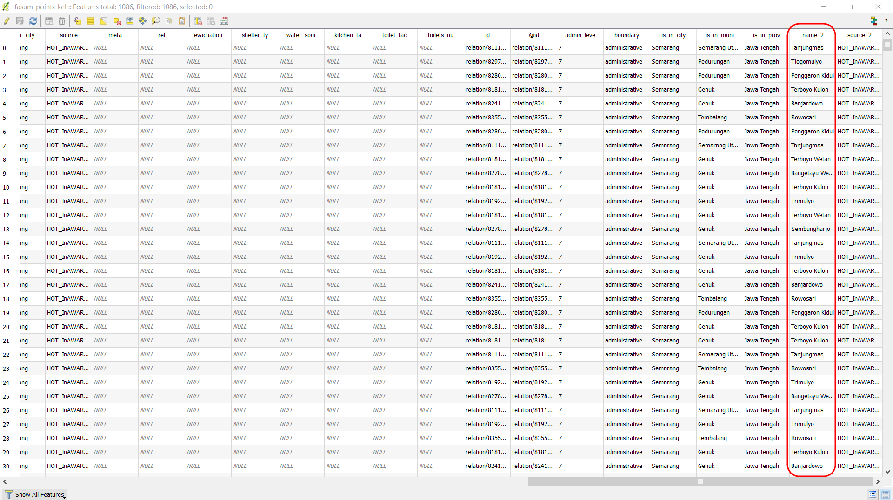
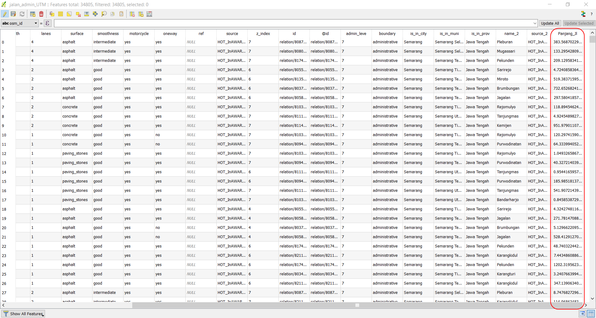
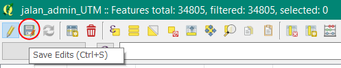

Perhitungan Kuantitas Data Menggunakan Plugin Group Stats
Download page as PDFTujuan Pembelajaran:
- Memahami cara melakukan instalasi tambahan (plugin) untuk menghitung jumlah objek menggunakan QGIS
- Memahami cara mengoperasikan group stats untuk menghitung jumlah objek di QGIS
Kuantitas adalah kualitas sesuatu hal yang terbentuk dari proses perhitungan dan pengukuran (Thompson:1990). Perhitungan kuantitas data dapat menjadi indikator dalam pencapaian proyek pemetaan yang dapat dituangkan ke dalam sebuah laporan pemetaan. Proses perhitungan kuantitas data OSM dapat dilakukan dengan menginstal plugin group stats di QGIS secara gratis, plugin ini dapat digunakan untuk menghitung jumlah objek berdasarkan kategori tertentu.
I. Instalasi Group Stats
Jika Anda belum memiliki QGIS, Anda dapat download di situs tautan berikut : http://download.osgeo.org/qgis/win64/QGIS-OSGeo4W-2.14.22-1-Setup-x86.exe untuk Windows 32 bit dan http://download.osgeo.org/qgis/win64/QGIS-OSGeo4W-2.14.22-1-Setup-x86_64.exe untuk Windows 64 bit.
Setelah selesai di download, kemudian klik Instal dan Buka QGIS
Klik menu Plugins → Manage and Install Plugins
Tampilan Menu Plugins
- Anda memerlukan koneksi internet untuk menginstal plugin, pada kotak Search ketikkan Group Stats. Berikan tanda centang pada group stats → Install Plugin. Tunggu beberapa saat hingga proses instalasi plugin selesai.

Plugin Group Stats
- Jika sudah berhasil, plugin akan muncul pada Menu Vector → GroupStats

Tampilan Plugin GroupStats
II. Cara Menghitung Jumlah Objek dengan Plugin Group Stats
Kalkulasi kuantitas data dapat dihitung berdasarkan batas administrasi agar memudahkan dalam membuat laporan bulanan dan memantau timeline pemetaan. Dalam perhitungan jumlah objek membutuhkan dua jenis data yaitu: file .shapefile objek OSM dan file .shapefile batas administrasi. Sebelum melakukan perhitungan, Anda harus mempunyai kedua file .shapefile tersebut.
Data batas administrasi yang akan digunakan pada bab ini dapat di download pada tautan http://tinyurl.com/admin-smg dan data objek OSM dapat di download dengan menggunakan Export Tool yang terdapat pada modul Penggunaan YAML pada Export Tool. Anda dapat melakukan perhitungan jumlah objek sebelum dan sesudah pemetaan, agar terlihat kalkulasi data yang dihasilkan dari proyek pemetaan. Hasil download data OSM pada pada modul Penggunaan YAML pada Export Tool akan digunakan untuk perhitungan jumlah objek. Ada 2 (dua) kategori .shapefile yang dihasilkan, yaitu:
Fasum :
- Semua objek yang masuk ke dalam amenity=*
- Instalasi Kelistrikan (power=*)
- Rekreasi dan RTH (leisure=*)
- Kantor pemerintahan (office=*)
- Supermarket (shop=supermarket)
Jalan : highway=*
Jika Anda telah memiliki data .shapefile seperti di atas, maka dapat melanjutkan langkah di bawah ini mengenai bagaimana menghitung kuantitas data OSM. Langkah - langkah dalam menghitung kuantitas data OSM, yaitu:
a. Persiapan Data Layer
- Persiapkan data objek OSM hasil download dari Export Tool yang sudah dilakukan Extract. Kemudian gunakan QGIS desktop untuk membuka data tersebut dengan klik Add Vector Layer → Browse yang berada di sisi sebelah kiri QGIS atau klik Menu Layer → Add Layer → Add Vector Layer → Browse.
Tampilan Add Vector Layer
- Arahkan ke direktori tempat penyimpanan file → Pilih semua → Open → Open

Daftar file .shp hasil download data OSM
- Layer-layer tersebut akan tampil pada map canvas (kanvas peta) dan daftar layer akan tampil pada Layers Panel.
Tampilan peta pada QGIS
- Tambahkan data vektor batas kelurahan ke QGIS dengan klik Add Vector Layer
Tampilan batas administrasi kelurahan
b. Penggabungan Layer Objek dan Batas Administrasi
- Gabungkan layer batas administrasi dengan layer objek OSM agar data objek memiliki atribut nama kelurahan. Klik Menu Vector → Geoprocessing Tool → Intersect untuk memulai penggabungan layer. Pada bagian input vector layer (layer objek OSM) pilih satu per satu objek untuk digabungkan dengan Intersect layer (layer kelurahan). Pilih Browse untuk menentukan lokasi penyimpanan output shapefile di direktori Anda, lalu klik OK.

Intersect penggabungan layer
- Setelah berhasil akan ada layer baru sebagai hasil gabungan keduanya. Untuk melihat hasilnya, Anda dapat membuka atribut tabel, dengan klik kanan pada layer fasum dan pilih Open Attribute Table. Pada tabel atribut akan terlihat nama kelurahan pada kolom name_2 di setiap objek OSM pada layer “fasum_point_admin”.

Tabel atribut fasum point
- Lakukan kembali proses intersect kepada layer “jalan” dan layer “fasum polygon”, sehingga Anda memiliki 3 (tiga) layer baru dari hasil penggabungan batas administrasi dan objek.
Buka atribut tabel di setiap layer dan periksa kolom yang dapat dijadikan acuan untuk perhitungan data OSM. Apakah di dalam tabel atribut tersebut sudah ada nama kolom seperti di bawah ini:
- Fasum point = amenity, power, office dan supermarket
- Fasum polygon = amenity, power, office, supermarket, dan leisure
- Jalan = highway
c. Perhitungan Data Objek OSM
Data OSM yang dihasilkan dari proyek pemetaan terdiri dari points, lines, dan polygons. Anda akan melakukan perhitungan dengan dua formula yang berbeda pada saat menggunakan plugin Group Stats. Data OSM dalam bentuk points dan polygons akan dihitung dengan menggunakan formula “count”, formula tersebut akan menghitung atribut objek berdasarkan banyaknya atribut yang terdapat di kolom atribut. Sedangkan data OSM dalam bentuk lines akan dihitung menggunakan formula “sum”, dimana formula tersebut atribut akan menjumlahkan segmen panjang jalan.
1. Perhitungan Data OSM dalam bentuk Points dan Polygon
- Jika Anda melakukan pemetaan dalam ruang lingkup kota, maka akan lebih mudah melakukan perhitungan kuantitas data per kecamatan. Lakukan filter pada layer “fasum_point_admin”, agar data yang ditampilkan hanya untuk kecamatan tertentu, dengan klik kanan pada layer fasum_point_admin → Filter. Kemudian, lakukan langkah seperti gambar di bawah ini.
Langkah-langkah filter data
- Ketika Anda klik OK akan tampil objek OSM yang hanya ada di Kecamatan Candisari
Tabel atribut hasil filter
- Sekarang Anda akan memulai proses perhitungan dengan plugin Group Stats. Buka Menu Vector → Group Stats → GroupStats

Group Stats
Lakukan seperti langkah di bawah ini:
- Layers= menunjukkan layer yang akan dihitung jumlah objeknya. Fields = secara otomatis menunjukkan kolom yang ada pada tabel atribut layers yang dipilih
- Columns= akan menjadi kategori kolom pada saat proses perhitungan, isi dengan kolom yang ada pada Fields, dengan cara pilih dan pindahkan ke kotak Columns.
- Rows= akan menjadi kategori baris pada saat proses perhitungan, isi dengan kolom yang akan dijadikan baris, dengan cara pilih dan pindahkan ke kotak Rows.
- Value= sebagai acuan dasar perhitungan, pilih formula + kolom Layers
- Klik Calculate untuk memulai proses perhitungan
- Layers= menunjukkan layer yang akan dihitung jumlah objeknya. Fields = secara otomatis menunjukkan kolom yang ada pada tabel atribut layers yang dipilih
Langkah-langkah Group Stats
Tabel yang muncul pada Group Stats, akan di copy dan di paste ke tempat yang lebih mudah untuk dimodifikasi misalnya menjadi bentuk grafik. Anda dapat memindahkan tabel tersebut ke Excel atau Google Sheets.
Caranya : Klik Data → Copy all to clipboard.

Copy dan paste tabel atribut
- Buka Microsoft Excel atau Google Sheet untuk memindahkan isi dari tabel hasil perhitungan Group Stats tersebut.
- Lakukan langkah yang sama untuk perhitungan objek-objek lainnya. Anda dapat melihat contoh tabel hasil perhitungan objek di Kota Semarang pada http://tinyurl.com/kuantitas-data
2. Perhitungan Objek Garis dengan Perhitungan Panjang Jalan
Perhitungan objek jalan berbeda dengan perhitungan objek dalam bentuk point dan polygon. Jika Anda ingin menghitung panjang jalan, maka data shapefile jalan Anda harus diatur ataupun diubah ke dalam koordinat UTM. Langkah-langkah untuk menghitung panjang jalan adalah sebagai berikut :
Mengubah Sistem Koordinat
- Klik kanan pada layer jalan → Save as → pilih Format ESRI Shapefile → Save as dalam direktori → CRS pilih sistem koordinat UTM sesuai dengan wilayah Anda → OK.

Simpan file dengan CRS berbeda
- Jika Anda memberikan tanda centang pada Add saved file to map, maka layer jalan yang baru akan langsung muncul di Layers Panel dan kanvas peta.
Membuat Kolom Baru untuk Perhitungan Panjang Jalan
- Klik kanan pada Layers “Jalan_Admin_UTM” → Open Attribute Table. Aktifkan toolbar yang terletak di atas dengan klik Toggle editing mode untuk mengaktifkan semua toolbar.

Toolbar Toggle editing mode
- Untuk menambahkan kolom baru, klik New Field yang terletak pada toolbar.

Toolbar New Field
Tampilan kotak dialog Add field akan nampak seperti gambar di bawah ini, ada beberapa pengaturan isian, yaitu :
- Name = menampilkan judul kolom
- Type = menunjukkan tipe data yang dapat dipilih sesuai dengan jenis data isi kolom. Tipe decimal number (real) akan menunjukkan bilangan desimal.
- Provider type double = Length menunjukkan jumlah angka di setiap baris dan precision menunjukkan jumlah desimal di belakang koma.
- Klik OK = untuk menyelesaikan pengaturan

Pengaturan Add field
Perhitungan Panjang Jalan (meter) dengan Field Calculator
Anda dapat memeriksa kolom yang sudah dibuat yang terletak di baris paling akhir pada tabel atribut. Untuk melakukan pengisian kolom perhitungan panjang jalan, Anda dapat mengaktifkan Open field calculator.
Ada beberapa pengaturan untuk pengisian field calculator, yaitu :
- Berikan tanda centang pada bagian Update existing field untuk memperbarui isian kolom
- Pilih kolom yang akan diperbaharui datanya
- Anda dapat mengetikkan “length” untuk menghitung panjang jalan secara otomatis.
- Klik dua kali pada bagian Geometry → length sebagai formula untuk menghitung panjang jalan, kata $length akan muncul pada kotak Expression.
- Klik OK untuk menyelesaikan pengaturan field calculator

Pengaturan Field Calculator untuk panjang jalan
- Periksa kolom paling akhir di tabel atribut untuk mengetahui panjang jalan untuk setiap segmen jalan.

Panjang jalan untuk segmen jalan
- Simpan hasil perhitungan jalan tersebut dengan cara klik toolbar Save Edits. Untuk mengakhiri mode pengeditan klik Toggle Editing.

Simpan perubahan
Menghitung Jumlah Panjang Jalan Berdasarkan Jenis Jalan dengan Group Stats
- Untuk memudahkan proses perhitungan kuantitas data untuk panjang jalan, Anda akan melakukan filter perhitungan berdasarkan administrasi kecamatan, langkah yang diperlukan yaitu klik kanan pada layer “jalan_admin_utm” → Filter → (ikuti langkah-langkah seperti gambar di bawah) → OK.
Filter berdasarkan Kecamatan
- Buka plugin Group Stats dengan klik Menu Vector → Group Stats → Group Stats.
- Pada bagian Value, Anda dapat menggunakan formula “sum” untuk menghitung panjang jalan yang terdapat di kolom Panjang_Jl yang telah dihitung sebelumnya.
Pengaturan Group Stats untuk panjang jalan
Sama seperti sebelumnya, tabel yang muncul pada Group Stats akan disalin dan paste ke tempat yang lebih mudah untuk dimodifikasi misalnya menjadi bentuk grafik. Anda dapat memindahkan tabel tersebut ke Microsoft Excel atau Google Sheets.
Caranya : Klik Data → Copy all to clipboard.

Copy dan paste tabel atribut
- Siapkan Microsoft Excel atau Google Sheet untuk memindahkan tabel tersebut
Tabel Data Statistik Jaringan Jalan (meter)
| Katagori Jalan | Candi | Jatingaleh | Jomblang | Kaliwiru | Karang Gunung | Tegalsari | Wonotinggal |
|---|---|---|---|---|---|---|---|
| Motorway | - | 1313.88 | 163.85 | - | - | - | - |
| Trunk | - | 1571.20 | - | 1602.19 | - | - | - |
| Primary | - | 1389.34 | 1264.54 | - | 206.96 | - | - |
| Secondary | 1065.13 | - | 24.17 | 2353.86 | - | - | - |
| Tertiary | 271.49 | 3920.71 | 1612.78 | - | 836.18 | - | - |
| Service | 500.24 | 2567.00 | 226.11 | 116.68 | 150.03 | 301.93 | 851.94 |
| Residential | 8486.45 | 14300.66 | 20972.41 | 5424.36 | 13322.03 | 15234.38 | 11635.03 |
| Pedestrian | - | 1313.88 | 163.85 | - | - | 141.93 | 344.38 |
| Path | - | 14.68 | - | - | - | 601.85 | 26.40 |
| Living Street | 5913.74 | 2841.22 | 6588.17 | 451.66 | 4401.59 | 3509.38 | 2576.71 |
- Lakukan langkah-langkah yang sama untuk melakukan perhitungan objek-objek lainnya. Contoh tabel perhitungan objek OSM yang ada di Kota Semarang http://tinyurl.com/kuantitas-data
RINGKASAN
Anda telah menyelesaikan perhitungan data OSM dengan menggunakan plugin Group Stats pada QGIS untuk mendapatkan kuantitas data objek yang dihasilkan dari proyek pemetaan. Data statistik tersebut dapat dikembangkan dalam bentuk laporan untuk mengetahui progres dan memantau kinerja pemetaan yang sedang Anda lakukan.